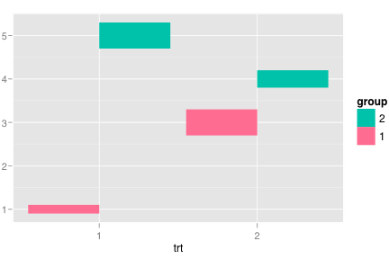
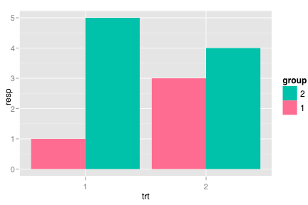
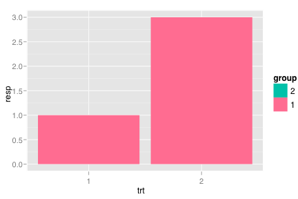
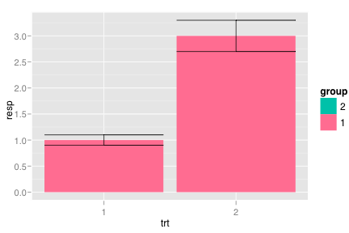
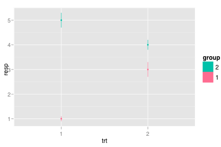
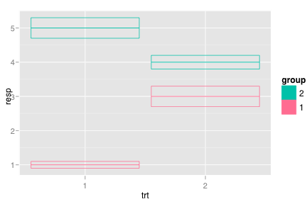
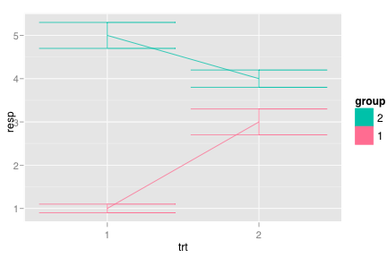

geom_errorbar
Error bars
Details
Aesthetics
The following aesthetics can be used with geom_errorbar. They are listed along with their default value. All geoms and scales can also use the group aesthetic. Read how this important aesthetic works in scale_group. Typically, you will associate an aesthetic with a variable in your data set. To do this, you use the aes function: geom_errorbar(aes(x = var)). Scales control the details of the mapping between data and aesthetic properties; after each aesthetic are listed scales that can be used with that aesthetic. The scale documentation will also provide references to help you interpret the default values.
Instead of mapping an aesthetic to a variable in your dataset, you can also set it to a fixed value. See the parameters section for details.
colour:
black(scales: brewer, gradient, gradient2, hue, manual)size:
1(scales: area, manual, size, size_discrete)width:
0.9
Parameters
When an aesthetic is used an a parameter, like geom_errorbar(colour = 3), it will override mappings from data.
colour, border coloursize, sizelinetype, line typewidth, width of geom
Default statistic
stat_identity. Override with the stat argument: geom_errorbar(stat="identity")
Default position
position_identity. Override with the position argument: geom_errorbar(position="jitter").
See also
- geom_pointrange: range indicated by straight line, with point in the middle
- geom_linerange: range indicated by straight line
- geom_crossbar: hollow bar with middle indicated by horizontal line
- stat_summary : examples of these guys in use
- geom_smooth: for continuous analog
Examples
> df <- data.frame(= factor(c(1, 1, 2, 2)),= c(1, 5, 3, 4),= factor(c(1, 2, 1, 2)),= c(0.1, 0.3, 0.3, 0.2)) > df2 <- df[c(1,3),] > > ggplot(df, aes(max = resp + se, min=resp - se, x=trt, fill=group)) + geom_bar(position="dodge")  > > # Define the top and bottom of the errorbars > limits <- aes(max = resp + se, min=resp - se, width=0.9) > > p <- ggplot(df, aes(fill=group, y=resp, x=trt)) > p + geom_bar(position="dodge")  > p + geom_bar(position="dodge") + geom_errorbar(limits, position="dodge", width=0.8)> > p <- ggplot(df2, aes(fill=group, y=resp, x=trt)) > p + geom_bar(position="dodge")  > p + geom_bar(position="dodge") + geom_errorbar(limits, position="dodge")  > > p <- ggplot(df, aes(colour=group, y=resp, x=trt)) > p + geom_point() + geom_errorbar(limits, width=0.2)
> p + geom_pointrange(limits)  > p + geom_crossbar(limits, width=0.2)  > > p + geom_line(aes(group=group)) + geom_errorbar(limits, width=0.2) 